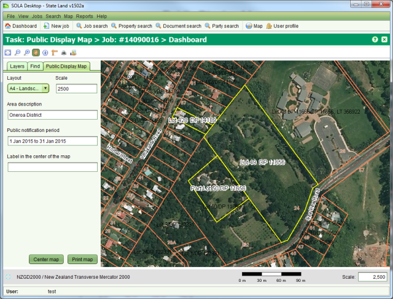
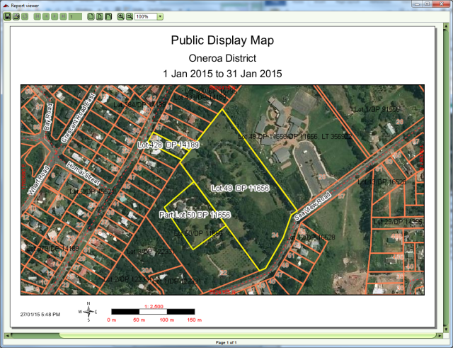

The state is obligated to ensure all parties that may be affected by its actions in relation
to state land are adequately notified of the state’s intentions. This is often addressed
through public notices and advertising. The Public Display Map screen can be used to produce
a large scale printout illustrating the parcels affected by a job in relation to other
parcels and geographic features. The printout can be posted on notice boards or in public
spaces or used as addendum to other public display material. To access the Public Display
List screen you must  Start a Public Display Map task from the Tasks tab of the Job Details screen.
Start a Public Display Map task from the Tasks tab of the Job Details screen.

Public Display Map
If you have used the Create or Change Parcels task to add parcels to the job, the Public Display Map screen will automatically zoom to the location of those parcels, highlighting them in bright yellow. On the Public Display Map tab, you can enter the plot layout (one of A4, A3 or A0 landscape or portrait) as well as the map scale, area description and the notification period. You can optionally enter text to display in the middle of the map plot as well as adjust the Layers tab to hide or show additional layer information on the map.
When you have the map setup as you require, click the Print map button to generate a document containing the map image. As with the Map Print tool, you can use the Report Viewer to save the print in several formats including PDF, DOCX and HTML or print a hard copy.

Public Display Map Print Out